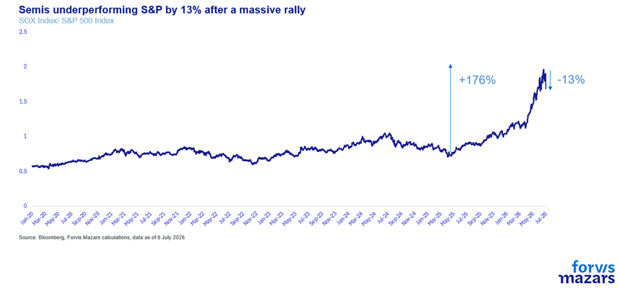
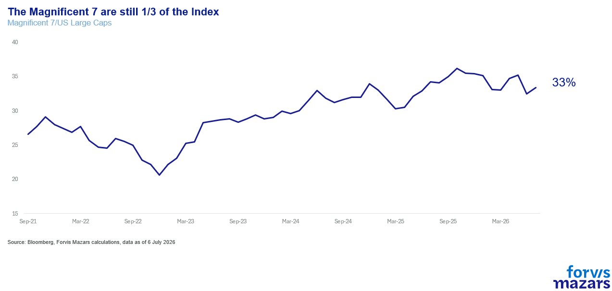
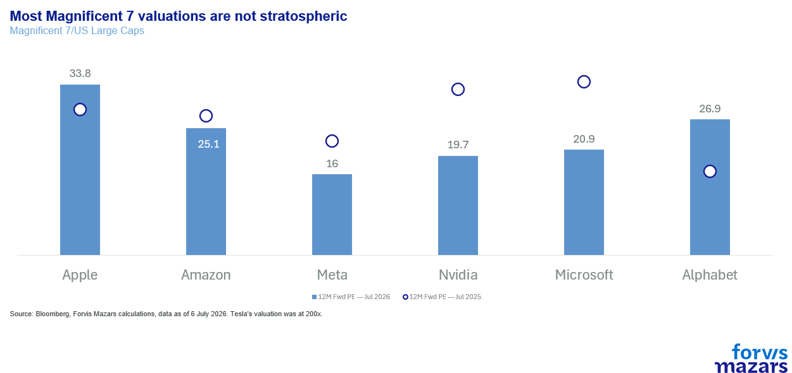
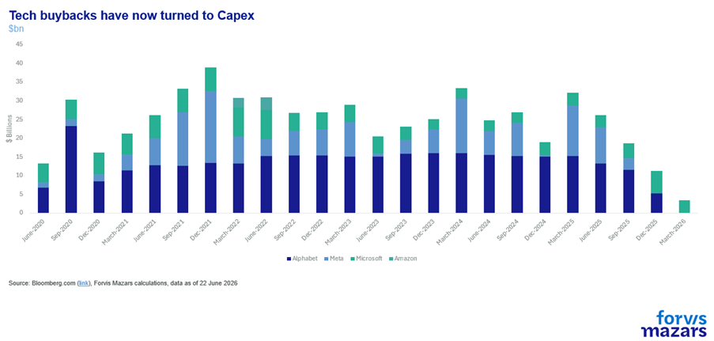
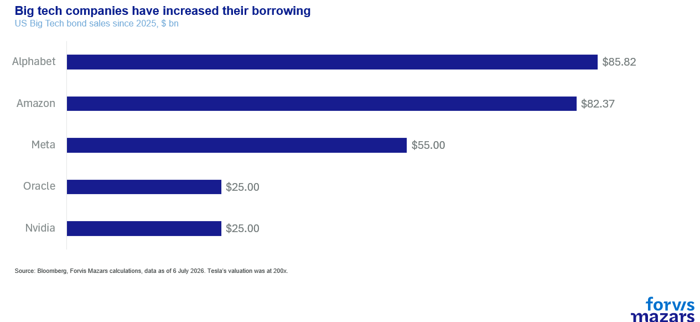
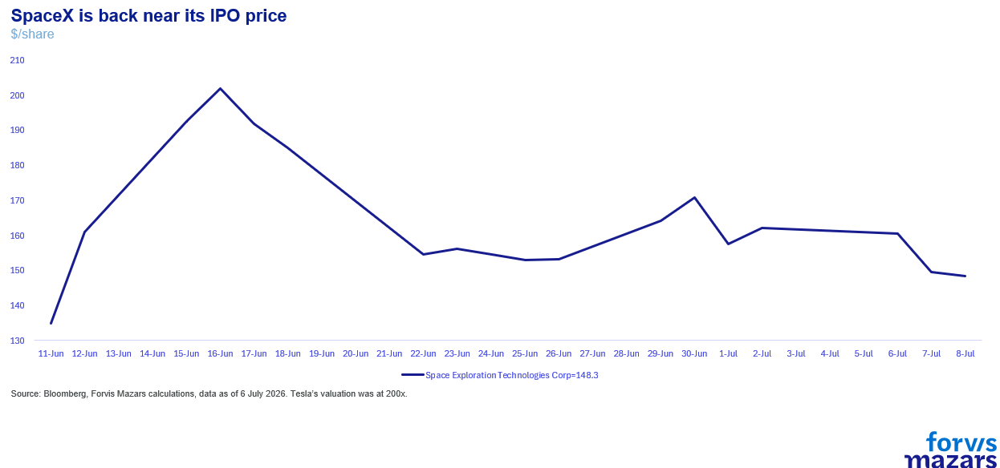
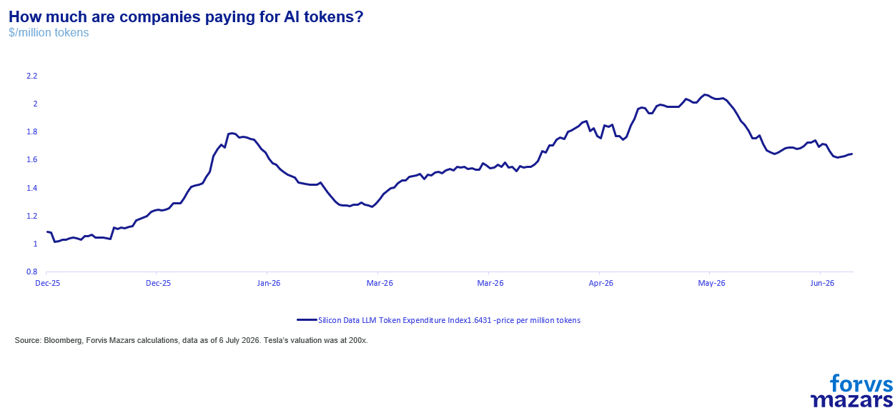

In the past few weeks technology has underperformed the wider market.
Investing in technology is changing. In the previous years, tech companies were debt-free, awash with cash, some of which they returned to shareholders. No they increased their debt, and the cash is directed to AI-related infrastructure.
We think that the road to success may not be necessarily straightforward for some of those companies. But the theme is very likely to persist and deliver the next industrial revolution.
Summary
With Iran still testing investor conviction, markets are increasingly focused on a broader shift: the evolving role of technology in equity performance. Recent underperformance of large tech, even as indices reach highs, suggests a healthier, broader rally and a normalisation of valuations, rather than a collapse of the AI theme. For businesses, this reinforces that AI adoption remains central; funding may shift, but strategic importance endures, supported even by governments if needed. For investors, the message is to trust the long-term theme but remain selective and nimble, as valuations adjust and competition intensifies.
With the situation in Iran still a developing story, testing investor conviction that the ceasefire would lead to a more permanent peace, we would focus on the larger theme for markets, which is the potential shift in narrative for tech stocks. In the past few weeks, despite US large caps reaching new highs, the large tech names have lagged significantly. By and large, this is good news, as it broadens the market rally and reduces the very high concentration of the Magnificent 7 stocks. But considering the importance of semiconductors and hyperscalers to equity market performance since the end of the pandemic, we need to wonder whether tech is as important to markets as it has been in the recent past.
Essentially, the question for financial markets can be pinned to this one chart, the massive outperformance of semiconductors. Will it continue, or will it revert to normal?

There are a few memorable events in recent market history, times when the market speaks to us. In October 1987, global financial markets told us not to tamper with currencies. Financial history registered Black Monday as the worst one-day drop, still, in history. In October 2001, the financial system spoke to us again, and told us it needed better supervision. Three years of economic malaise followed the fall of Enron. In September 2008, Wall Street went silent altogether, as Lehman was barring its doors, initiating the worst crisis in almost a century.
Singular events tend to be mostly negative and immediately signal to businesses and investors that their negative repercussions will last long. 30th November 2022 is a very notable exception. A positive singularity. That day, it wasn’t markets but computers who spoke to us. ChatGPT became an instant sensation, gathering adopters faster than any other app in history. A world desperate for light beyond the pandemic and what felt like endless lockdowns, suddenly looked towards Artificial Intelligence with all the speed and grace that the sunflower leans towards daylight. Long confined in a field of fiction, far outside the mundane, AI kicked the doors of reality in the space of less than a month. Suddenly, everyday workers, parents, children, were faced with a technological singularity that they still try to come to terms with. Whether AI is the stuff from Ian Banks’s dreams, or Ridley Scott’s and James Cameron’s nightmares, and anything in between, is still an open question.
But for investors, most of whom grew up with the cultural references crafted Isaac Asimov, Philip K. Dick and the Watchovskis, this was the one they have been preparing for decades.
As a result, since 2022, anything and everything that had to do with AI simply went up. Nvidia went from a procurer of gaming graphics cards to the world most important high-end chipmaker, gaining 1250% since the end of 2022. Taiwan Semiconductors (TSMC) grew 246% in value at the same time. ASML, a company that makes semiconductor equipment, became the most valuable European company, increasing its market cap by 200%. The so-called Magnificent 7 (Nvidia, Apple, Google, Microsoft, Amazon, Meta, Tesla) now constitute 33% of total US large cap market cap.

In the last few weeks, however, large US tech stocks have lagged their large-cap counterparts. Even as indices hit new highs, the Magnificent Seven have underperformed.
Is the so-called “AI-Bubble” finally ready to burst? We don’t think so. Primarily because we don’t see a bubble” per se.
This time is not like the Wild West of thedot.combubble. Behind these transactions lie helpful regulation, the implicit and explicit promises of the US government to help the AI industry, in order to achieve a strategic victory in the global geopolitical and geoeconomic race. Also, there is a US central bank which still, at least implicitly, remains determined to help in times of financial market stress.
Second, valuations of some of the key companies after this extraordinary Magnificent Seven rally have come down to much more palatable levels. They deflated, but didn’t burst.

This is only natural. The investment case has changed. Two years ago, an investor bought US large tech names for the cash flow generation and the share buybacks. The AI revolution came with the need for massive capital expenditure. This is reducing cash for shareholders, while increasing uncertainty as that capital is now tied up to data centres and other infrastructure projects.

Investors also bought balance sheets clean of debt. But now, the same companies are not only cutting buybacks, but turning to debt markets to raise even more money.

In essence, it is asking investors, a lot of whom have been retail, “bandwagon” allocators, to trust the long-term case over the short term hype. Most agreed to be patient. Some shifted capital to companies that better represented the recent sentiment-driven market, like Space X. Others are saving up more capital to participate in the coming IPOs of Antrhopic and OpenAI.

This is all very consistent with a narrative shifting in nature, becoming more mainstream and not with a “bubble bursting”.
Are there worrying signs?
Yes. Many investors are worried about the fall in average token prices, which may suggest the commoditisation of AI and potential shifts to cheaper models if the US giants try to hike prices.

And then there is the "circular economy” in the AI ecosystem. In September 2025, Nvidia committed up to $100bn to OpenAI, tied to the deployment of ten gigawatts of its systems, with much of that cash flowing back into Nvidia GPUs (it has since reduced that investment to about a third). In November, it agreed to invest up to $10bn in Anthropic, alongside Microsoft's $5bn, as Anthropic committed $30bn to Azure and up to one gigawatt of Grace Blackwell and Vera Rubin capacity. That round lifted Anthropic's valuation to roughly $350bn, from $183bn in September. The supplier is funding its two largest customers, and their purchases underwrite its own revenue line. As a result, Anthropic’s valuation has risen by roughly one trillion, from $183bn in September to $1.2tn ahead of its upcoming IPO.
Given, however, the institutional support for the infrastructure build, many in the market are happy to make the assumption that potential capital shortfalls will be covered one way or another, either by companies with ample capital reserves and easy access to capital, or even government funding. As for lower prices per tokens, they could actually increase adoption.
What does it mean for businesses?
Reading the above article, one might conclude that it is irrelevant for businesses. Nothing could be further from the truth. The stock market AI theme is closely related to the business adoption of AI. If big AI providers failed in the equity market, some fear, then they would cease to deliver their product. A product on which virtually every company on the planet, small or big, listed or non-listed, is designing its business strategy around. We have often maintained scepticism as to the ease of commercial success by the early entries, or regarding the ease in completing complex infrastructure. But we think that ways and means will be found, one way or another, even if this requires government intervention. AI sovereignty is one of the most important items on most governments' agendas right now. We don’t think this will necessarily be a smooth ride, but we do think that the train will reach its destination, i.e. delivery of the next industrial revolution. This is what businesses need to have in mind. The stock market is a place of funding. But failure to obtain funds one way will likely not mean the end for a global geostrategic tool like AI.
What does it mean for investors?
The message is similar for investors. We would place trust in the theme, more than we would necessarily on each AI purveyor. Most AI companies face difficult financing, a challenging market and, importantly, competition from cheaper Chinese models. But the infrastructure build is real. So are business productivity gains. The investing approach needs to be extremely nimble and selective. Many a big tech name will very likely be challenged. Valuations adapting and deflating to the next iteration of the theme, from “cash cows” to mature tech companies, is a strong suggestion that the theme itself will probably endure.